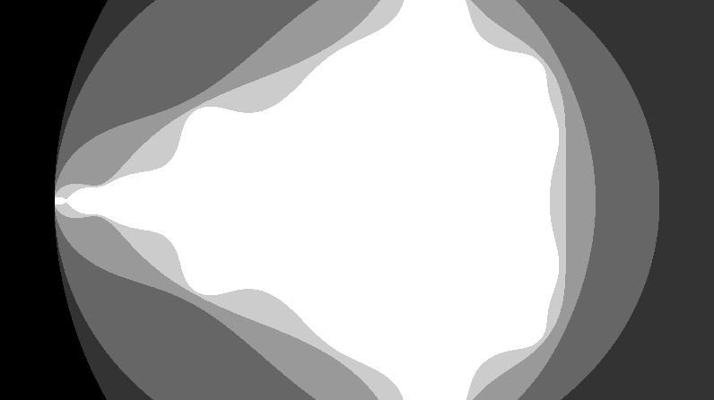
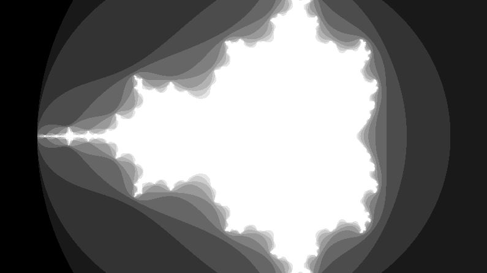
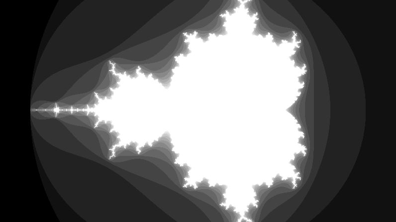
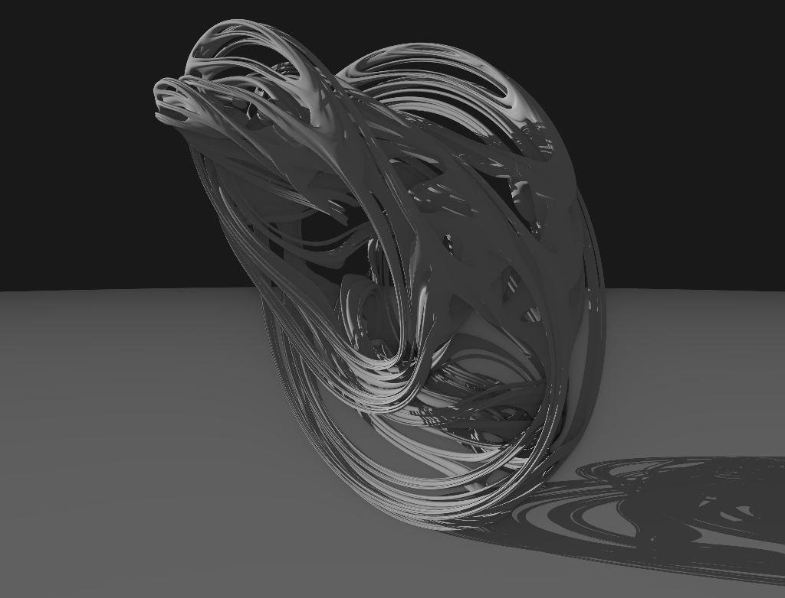

rendering 3d fractals

What are Fractals?
Say you start with some kind of space, be it 2D or 3D. For every single point p in that space, you apply some test f(). As a result, all points that pass the test f() will form some kind of geometry. And if your test f() is just right, these points will form what is called, a fractal.
Of course, that's just one interpretation of fractal. I don't know enough math to give you an actual mathematical view on what fractals are. But the above expalanation should suffice for what we are about to do. Let's first solidify this concept by introducing the most famous fractal of all: the Mandelbrot set.
The Mandelbrot Set
The Mandelbrot Set is a fractal that exists in the complex plane. It is formed by complex numbers that obey the following rule:
A complex number c is a part of the Mandelbrot Set if its length does not diverge under an infinite amount of iterations of this reccurance function:
zn = zn-1*zn-1 + c
where the base case is:
z0 = 0 + 0i
where both z and c are complex numbers
If the magnitude of zinfinity does not diverge towards infinity, that that point is a part of the Mandelbrot set. An intuitive way to interpret this test is to imagine the complex number to be orbiting on the complex plane. And with each iteration, more complex numbers orbits too far and eventually diverges out to infinity.
Of course, it's non-practical to test against infinity amount of iterations or a distance of infinity. There are some shortcuts we can take. For example, it is known that if the magnitude of a complex number is above 2, then it is at the point of no return. As for iterations, for a finite resolution, if the iteration is sufficiently high then it will produce an image that is practically the same one produced by an infinite amount of iterations.
Here are a series of screenshots with different amount of iterations. You can clearly see that with each iteration, more points on the complex plane gets "carved" out, and converges into an interesting shape.
5 iterations:
10 iterations:
15 iterations:
The above Mandelbrot Set shapes are colored using what's formally called "Escape Time", it just means how many iterations it took for the point to diverge. The entire source code for the above images is below (runs on shadertoy):
Defining the 3D Julia Set
So that was how most 2D fractals are made. Recall that whether or not a point is accepted into the fractal set depends on its behavior when orbitting. In order to create interesting 3D fractals, we must find some way to make 3D points orbit in some interesting ways.
The first thought is finding the equivalent of complex numbers in 3D space. Well, there aren't really any. But there are quaternions, which are the equivalent of complex numbers in 4D space.
We can try convert 3D points into quaternions by stubbing zero into one of the dimensions, then borrow the same orbit equations from the Mandelbrot Set. However, I will make a small tweak to the rules. Why? well, spoiler alert, the 3D Mandelbrot Set isn't that interesting without some extra rotations. And this new variant, called Julia Set, is much more interesting when done in 3D.
A quaternion z is a part of the Julia Set if its length does not diverge under an infinite amount of iterations of this reccurance function:
zn = zn-1*zn-1 + c
where the base case is:
z0 = z
where z is a quaternion converted from the 3d point being tested, and c is some constant quaternion.
If a point p, when converted into its equivalent quaternion z, does not diverge under this test, then we can say it is a part of the 3D Julia Set.
So we have defined some rules for our new 3D fractal, but how do we actually render them? The screen is 2D, so there is no convenient ways to slap the fractal onto the screen like we did with the Mandelbrot Set.
Constant Stepped Raytracing
An ostensible approach is to do raytracing on these 3D fractals. But in order to carry this out, we need some way to do intersection test between rays and the 3D fractals's surface. But we only have point test available to us. What we can do, is to step along the ray cautiously and test if the current point is within the fractal at each step.
Since we are stepping at a constant rate. We also can't make the step size too big, as the ray will overshoot and cause artifacts in our final image. We also can't let the step size be too small, otherwise the rendering process will take up too much time.
Here's one out of millions of rays stepping along to test against the 3D fractal geometry
This solution is probably the simplest solution. It is guaranteed to work, but it's too slow to be desirable.
Raytracing with Distance Estimators
In Hart's paper, Ray Tracing Deterministic 3-D Fractals, he shows the following equation:
fn(z) carries the same meaning as our zn. And f'n(z), as you might have guessed, is the derivative of fn(z).
The value of this expression, d(z), gives the distance estimator to our 3D fractal. Distance estimator allows us to create an unbounding sphere around z, the point being tested. It tells us that the 3D fractal must be at least d(z) amount of distance away from our current point. Therefore, instead of stepping a constant length, we can advance the ray by the estimated distance returned by the distance estimator.
A ray stepping using the distance estimator. The circles in the images are unbounding volumes that allows the ray to advance in big steps without overshooting
Note that the distance estimator only ensures to be the lower bound of the closest distance between current point and the 3D fractal. It might not be anywhere near the actual distance value, hence the word "estimator".
Still, two questions linger: how did we arrive at this distance estimator equation, and how do we compute the derivative of the orbit of z? Well, let's hold on to the first question for a big longer, and see how to compute the derivative first.
Calculating the Derivative of an Orbit
We can obtain the derivative of a running orbit by first differentiating our recurrance functions:
z0' = 1
zn' = 2*zn-1*zn-1' (chain rule)
Using these two equations, we can keep track of the orbit derivative as we run the iterative orbit on the quaternion being tested. Now we hold all the elements we need to compute an estimated distance to a 3D Julia Set. So why don't we write out the code to compute the estimated distance, given an arbitrary point?
Raymarching Using the Distance Estimator
As I have alluded to, we can incorporate the new distance estimator to speed up our raytracing process dramatically. Instead of stepping constant distances, we can update the stepping distance to be the estimated distance. Just for completion's sake, here's the code:
Using the above equations, and a little bit of lighting tricks, we can already get nice fractal renders:
Julia set, with c = 0.1i + 0.3j + 0.9k + 0.1
For this render, a secondary ray is traced towards the light source to compute shadow. The fake ambient occlusion is just an inverse of the iteration fog.
Here's the source code that rendered the above image.
fractal.cppIt doesn't require any dependency to run and it doesn't rely on external platform API. Due to the same reasons, I don't have multithreading or SIMD to speed it up. If you have a decent computer, expect around 40~50 seconds to spit out the rendered picture. But hey, you can run it on all platforms without any convoluted build tools.
EDIT: for some reason at the time of this writing, I seemed to forget that the new C++ standard includes mulithreading libraries. So I went ahead and added a simple multithreaded job system with std::thread and std::atomic. This multithreaded version finishes rendering in around 7~8 seconds, which is a huge speed up. Since I only used the standard library, you can still run it on all platforms with a single build command.
Source code for the aceelerated fractal raytracer
mt_fractal.cppMore Variations, Only Limited by Your Imagination
There are so many more variations of 3D fractals. Recall the process that we used to come up with a the Julia Set. There are countless other things you can try for the orbitting process and you might get some really interesting results. Here is a a whole gallery of them discovered by others.
What's more, you can tweak the existing orbit equations by applying transformations to them in each iteration. For example, I changed the Julia Set by applying some extra translation to the quaternion in each iteration. I think of it as "pulling" the quaternion towards a certain direction during their orbit:
"Infinite" Details
What's truly fascinating about fractals are their infinite details. If what you're rendering is a true fractal, no matter how much you zoom in into the fractal, there will always be more variations to find. Due to this property, The derivative of any point on the surface of a 3d fractal is undefined (which is not always true in the fractals that we created ourselves, which makes them fake fractals). An easy way to zoom into a 3d fractal is to scale the space in which the fractal resides. By doing so, you are scaling down the camera space and seeing more details out of the fractal.
With the tools that we explored in this article, you should be able to easily write a pathtrace that produces image that is infinitely more physically accurate, like the one below (source code included).
A shallow zoom into the Mandelbulb fractal, pathtraced. Rendered in 4 minutes.
Source code:
mandelbulb.cpp